My Movie Collection Connected to the OMDb (Open Movie) API
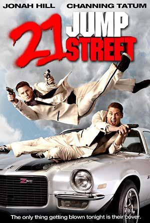
21 Jump Street
A pair of underachieving cops are sent back to a local high school to blend in and bring down a synthetic drug ring.
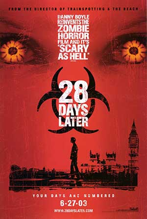
28 Days Later...
Four weeks after a mysterious, incurable virus spreads throughout the UK, a handful of survivors try to find sanctuary.The 40-Year-Old Virgin
Goaded by his buddies, a nerdy guy who's never "done the deed" only finds the pressure mounting when he meets a single mother.
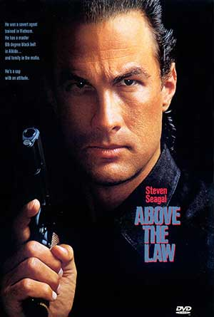
Above the Law
A former Special Operations Vietnam vet works as a Chicago cop and uncovers CIA wrongdoing.Airplane!
A man afraid to fly must ensure that a plane lands safely after the pilots become sick.
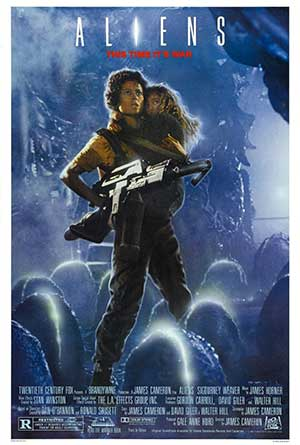
Aliens
The planet from Alien (1979) has been colonized, but contact is lost. This time, the rescue team has impressive firepower, but will it be enough?American Beauty
A bored suburban father has a mid-life crisis after becoming infatuated with his daughter's best friend.American History X
A former neo-nazi skinhead tries to prevent his younger brother from going down the same wrong path that he did.
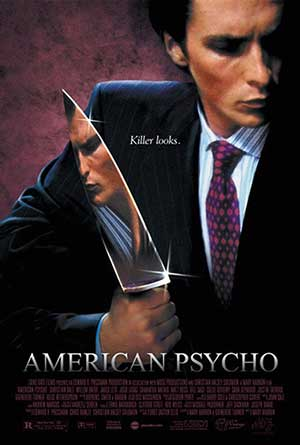
American Psycho
A wealthy New York investment banking executive hides his alternate psychopathic ego from his co-workers and friends as he delves deeper into his violent, hedonistic fantasies.
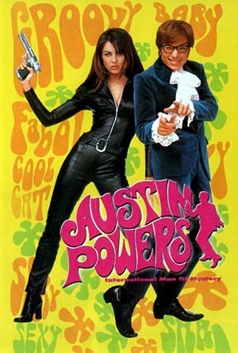
Austin Powers: International Man of Mystery
A 1960s hipster secret agent is brought out of cryofreeze to oppose his greatest enemy in the 1990s, where his social attitudes are glaringly out of place.Austin Powers: The Spy Who Shagged Me
Dr. Evil is back...and has invented a new time machine that allows him to go back to the 60's and steal Austin Powers's mojo, inadvertently leaving him "shagless".Austin Powers in Goldmember
Upon learning that his father has been kidnapped, Austin Powers must travel to 1975 and defeat the aptly named villain Goldmember - who is working with Dr. Evil.
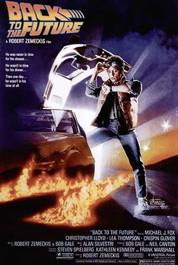
Back to the Future
A young man is accidentally sent thirty years into the past in a time-traveling DeLorean invented by his friend, Dr. Emmett Brown, and must make sure his high-school-age parents unite in order to save his own existence.
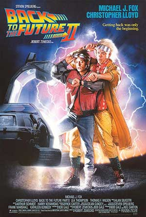
Back to the Future Part II
After visiting 2015, Marty McFly must repeat his visit to 1955 to prevent disastrous changes to 1985... without interfering with his first trip.
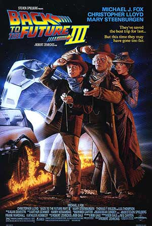
Back to the Future Part III
Enjoying a peaceable existence in 1885, Doctor Emmet Brown is about to be killed by Buford "Mad Dog" Tannen. Marty McFly travels back in time to save his friend.
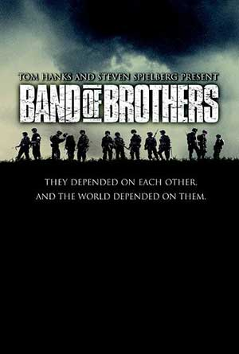
Band of Brothers
The story of Easy Company of the US Army 101st Airborne division and their mission in WWII Europe from Operation Overlord through V-J Day.
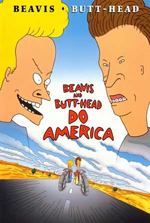
Beavis and Butt-Head Do America
The dimwitted teen duo of Beavis and Butt-Head travel across America in search of their stolen television set.The Believer
A young Jewish man develops a fiercely anti-Semitic philosophy. Based on the factual story of a K.K.K. member in the 1960s who was revealed to be Jewish by a New York Times reporter.
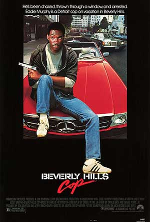
Beverly Hills Cop
A freewheeling Detroit cop pursuing a murder investigation finds himself dealing with the very different culture of Beverly Hills.
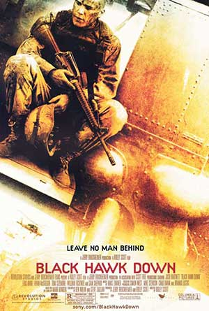
Black Hawk Down
123 elite U.S. soldiers drop into Somalia to capture two top lieutenants of a renegade warlord and find themselves in a desperate battle with a large force of heavily-armed Somalis.The Bourne Identity
A man is picked up by a fishing boat, bullet-riddled and suffering from amnesia, before racing to elude assassins and regain his memory.
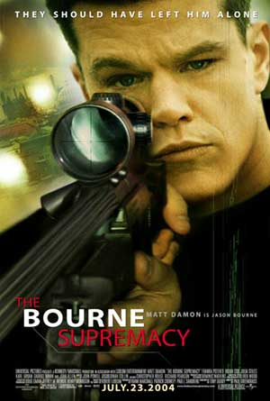
The Bourne Supremacy
When Jason Bourne is framed for a CIA operation gone awry, he is forced to resume his former life as a trained assassin to survive.
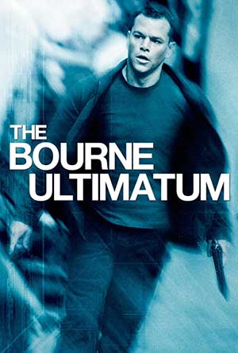
The Bourne Ultimatum
Jason Bourne dodges a ruthless CIA official and his agents from a new assassination program while searching for the origins of his life as a trained killer.
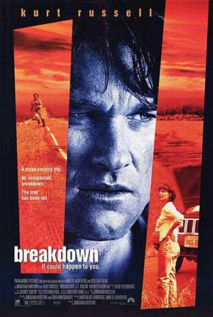
Breakdown
A man searches for his missing wife after his car breaks down in the middle of the desert.
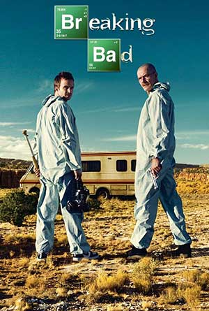
Breaking Bad
A chemistry teacher diagnosed with terminal lung cancer teams up with his former student to cook and sell crystal meth.
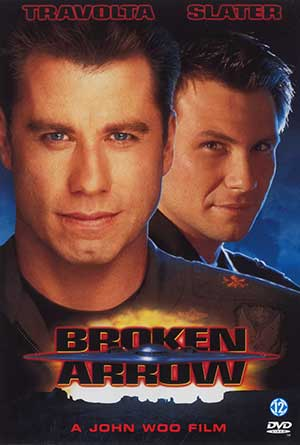
Broken Arrow
Terrorists steal nuclear warheads from the U.S. military but don't count on a pilot and park ranger spoiling their plans.
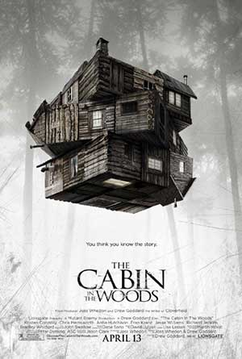
The Cabin in the Woods
Five friends go for a break at a remote cabin in the woods, where they get more than they bargained for. Together, they must discover the truth behind the cabin in the woods.
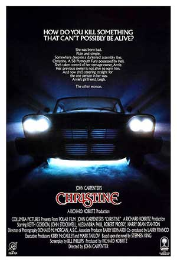
Christine
A nerdish boy buys a strange car with an evil mind of its own and his nature starts to change to reflect it.
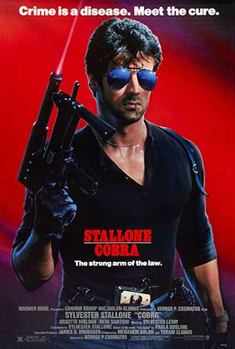
Cobra
A tough-on-crime street cop must protect the only surviving witness to a strange murderous cult with far reaching plans.
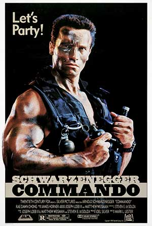
Commando
A retired elite Black Ops Commando launches a one man war against a group of South American criminals who have kidnapped his daughter to blackmail him into starting a revolution and getting an exiled dictator back into power.Conspiracy
A dramatic recreation of the Wannsee Conference where the Nazi Final Solution phase of the Holocaust was devised.Crank Yankers
A show with real 'crank' phone calls to real victims. Puppets are added as the 'actors' to give visual support to what is happening in the phone calls.
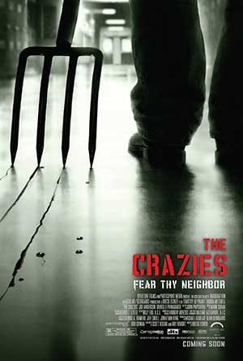
The Crazies
About the inhabitants of a small Iowa town suddenly plagued by insanity and then death after a mysterious toxin contaminates their water supply.
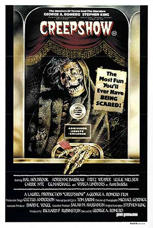
Creepshow
An anthology which tells five terrifying tales based on the E.C. horror comic books of the 1950s.
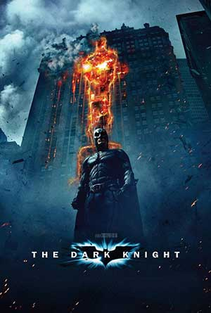
The Dark Knight
When the menace known as the Joker wreaks havoc and chaos on the people of Gotham, the caped crusader must come to terms with one of the greatest psychological tests of his ability to fight injustice.
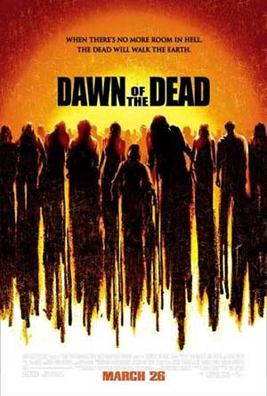
Dawn of the Dead
A nurse, a policeman, a young married couple, a salesman, and other survivors of a worldwide plague that is producing aggressive, flesh-eating zombies, take refuge in a mega Midwestern shopping mall.
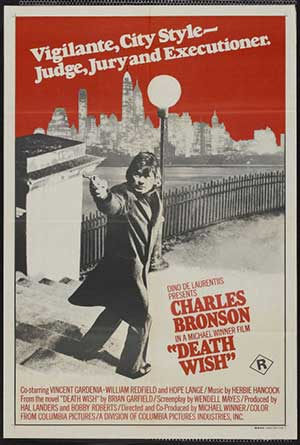
Death Wish
A New York City architect becomes a one-man vigilante squad after his wife is murdered by street punks in which he randomly goes out and kills would-be muggers on the mean streets after dark.
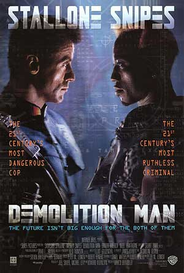
Demolition Man
A police officer is brought out of suspended animation in prison to pursue an old ultra-violent nemesis who is loose in a non-violent future society.The Devil's Advocate
An exceptionally adept Florida lawyer is offered a job to work in New York City for a high-end law firm with a high-end boss - the biggest opportunity of his career to date.
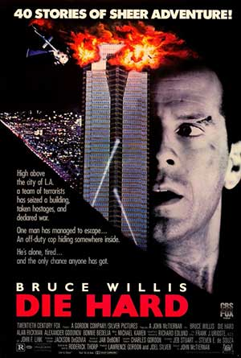
Die Hard
John McClane, officer of the NYPD, tries to save his wife Holly Gennaro and several others that were taken hostage by German terrorist Hans Gruber during a Christmas party at the Nakatomi Plaza in Los Angeles.
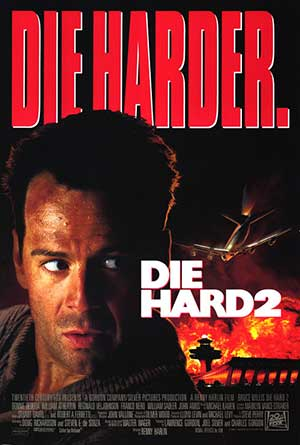
Die Hard 2
John McClane attempts to avert disaster as rogue military operatives seize control of Dulles International Airport in Washington, D.C.
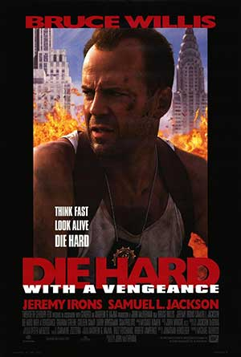
Die Hard: With a Vengeance
John McClane and a Harlem store owner are targeted by German terrorist Simon Gruber in New York City, where he plans to rob the Federal Reserve Building.
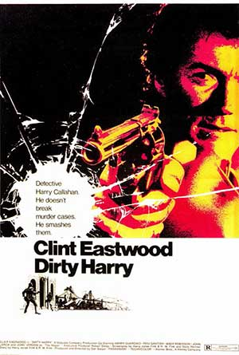
Dirty Harry
When a mad man calling himself 'the Scorpio Killer' menaces the city, tough as nails San Francisco Police Inspector Harry Callahan is assigned to track down and ferret out the crazed psychopath.Downfall
Traudl Junge, the final secretary for Adolf Hitler, tells of the Nazi dictator's final days in his Berlin bunker at the end of WWII.
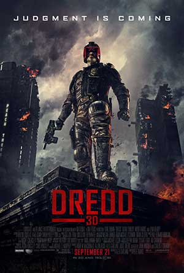
Dredd
In a violent, futuristic city where the police have the authority to act as judge, jury and executioner, a cop teams with a trainee to take down a gang that deals the reality-altering drug, SLO-MO.Dumb & Dumber
The cross-country adventures of two good-hearted but incredibly stupid friends.
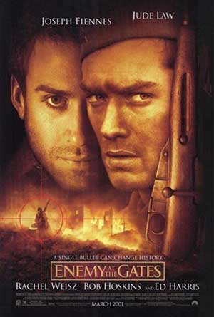
Enemy at the Gates
A Russian and a German sniper play a game of cat-and-mouse during the Battle of Stalingrad.
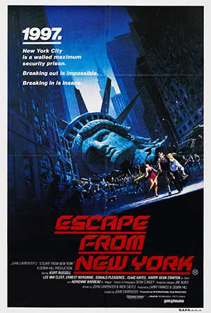
Escape from New York
In 1997, when the US President crashes into Manhattan, now a giant maximum security prison, a convicted bank robber is sent in to rescue him.
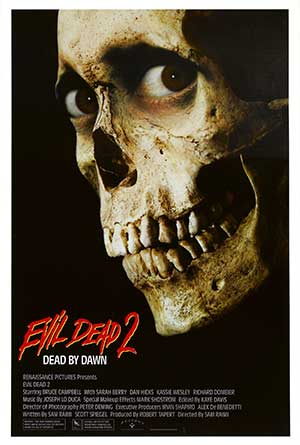
Evil Dead II
The lone survivor of an onslaught of flesh-possessing spirits holds up in a cabin with a group of strangers while the demons continue their attack.
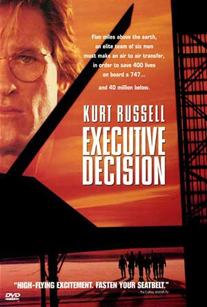
Executive Decision
When terrorists seize control of an airliner, an intelligence analyst accompanies a commando unit for a midair boarding operation.Face/Off
In order to foil an extortion plot, an FBI agent undergoes a face-transplant surgery and assumes the identity and physical appearance of a ruthless terrorist, but the plan turns from bad to worse when the same criminal impersonates the cop.
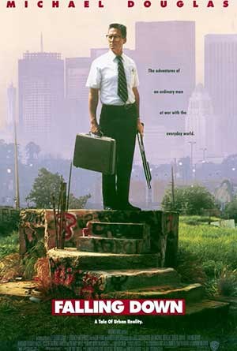
Falling Down
A borderline personality disordered defense worker frustrated with the various flaws he sees in society, begins to psychotically and violently lash out against them.
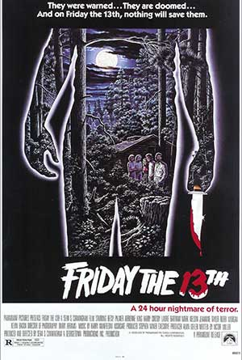
Friday the 13th
A group of camp counselors is stalked and murdered by an unknown assailant while trying to reopen a summer camp which, years before, was the site of a child's drowning.Full Metal Jacket
A pragmatic U.S. Marine observes the dehumanizing effects the Vietnam War has on his fellow recruits from their brutal boot camp training to the bloody street fighting in Hue.
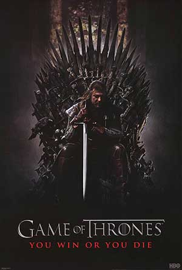
Game of Thrones
While a civil war brews between several noble families in Westeros, the children of the former rulers of the land attempt to rise up to power. Meanwhile a forgotten race, bent on destruction, return after thousands of years in the North.
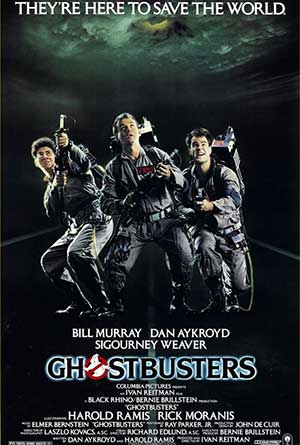
Ghostbusters
Three former parapsychology professors set up shop as a unique ghost removal service.
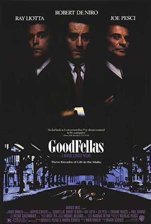
Goodfellas
Henry Hill and his friends work their way up through the mob hierarchy.Halloween
On Halloween night of 1963, 6-year old Michael Myers stabbed his sister to death. After sitting in a mental hospital for 15 years, Myers escapes and returns to Haddonfield to kill.
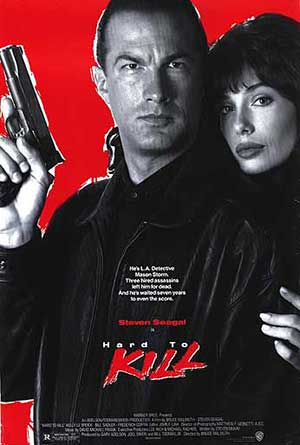
Hard to Kill
Mason Storm, a 'do it alone' cop, is gunned down at home. The intruders kill his wife, and think they've killed both Mason and his son too. Mason is secretly taken to a hospital where he ...
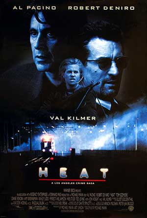
Heat
A group of professional bank robbers start to feel the heat from police when they unknowingly leave a clue at their latest heist.
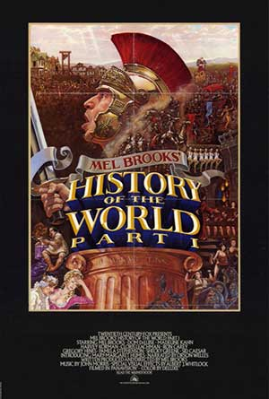
History of the World: Part I
Mel Brooks brings his one-of-a-kind comic touch to the history of mankind covering events from the Old Testament to the French Revolution in a series of episodic comedy vignettes.
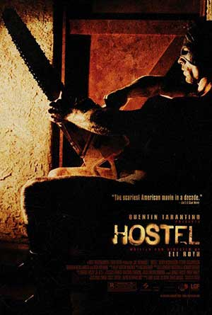
Hostel
Three backpackers head to a Slovak city that promises to meet their hedonistic expectations, with no idea of the hell that awaits them.
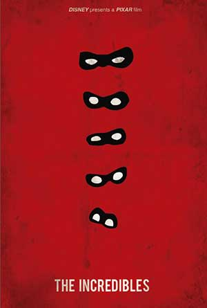
The Incredibles
A family of undercover superheroes, while trying to live the quiet suburban life, are forced into action to save the world.
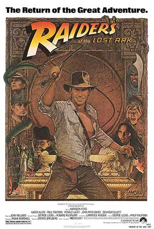
Raiders of the Lost Ark
Archaeologist and adventurer Indiana Jones is hired by the US government to find the Ark of the Covenant before the Nazis.
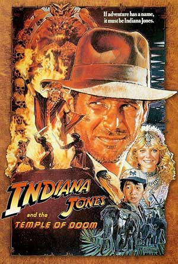
Indiana Jones and the Temple of Doom
After arriving in India, Indiana Jones is asked by a desperate village to find a mystical stone. He agrees, and stumbles upon a secret cult plotting a terrible plan in the catacombs of an ancient palace.
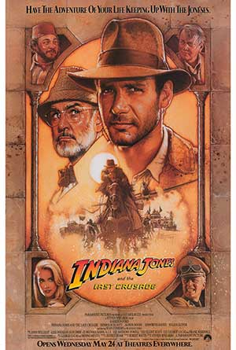
Indiana Jones and the Last Crusade
When Dr. Henry Jones Sr. suddenly goes missing while pursuing the Holy Grail, eminent archaeologist Indiana Jones must follow in his father's footsteps and stop the Nazis.Inglourious Basterds
In Nazi-occupied France during World War II, a plan to assassinate Nazi leaders by a group of Jewish U.S. soldiers coincides with a theatre owner's vengeful plans for the same.The Italian Job
After being betrayed and left for dead in Italy, Charlie Croker and his team plan an elaborate gold heist against their former ally.K-19: The Widowmaker
When Russia's first nuclear submarine malfunctions on its maiden voyage, the crew must race to save the ship and prevent a nuclear disaster.The Kids in the Hall
The TV series of the Canadian sketch comedy troupe that, more often than not, puts bizarre, unique, and insane twists in their skits.Last Man Standing
A drifting gunslinger-for-hire finds himself in the middle of an ongoing war between the Irish and Italian mafia in a Prohibition era ghost town.Law Abiding Citizen
A frustrated man decides to take justice into his own hands after a plea bargain sets one of his family's killers free. He targets not only the killer but also the district attorney and others involved in the deal.Léon: The Professional
Mathilda, a 12-year-old girl, is reluctantly taken in by Léon, a professional assassin, after her family is murdered. Léon and Mathilda form an unusual relationship, as she becomes his protégée and learns the assassin's trade.Lethal Weapon
A veteran cop, Murtaugh, is partnered with a young suicidal cop, Riggs. Both having one thing in common; hating working in pairs. Now they must learn to work with one another to stop a gang of drug smugglers.Lethal Weapon 2
Riggs and Murtaugh are on the trail of South African diplomats who are using their immunity to engage in criminal activities.The Lion King
Lion cub and future king Simba searches for his identity. His eagerness to please others and penchant for testing his boundaries sometimes gets him into trouble.Marked for Death
Chicago DEA agent John Hatcher has just returned from Colombia, where his partner was killed in the line of duty by a drug dealer who has since been taken down. As a result of his partner's...The Meaning of Life
The comedy team takes a look at life in all its stages in their own uniquely silly way.Monsters, Inc.
In order to power the city, monsters have to scare children so that they scream. However, the children are toxic to the monsters, and after a child gets through, two monsters realize things may not be what they think.Mr. Brooks
A psychological thriller about a man who is sometimes controlled by his murder-and-mayhem-loving alter ego.